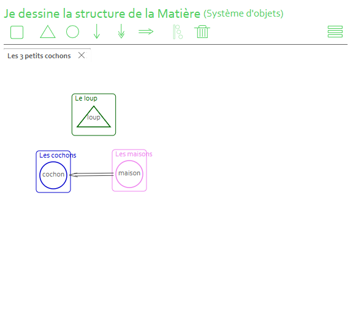
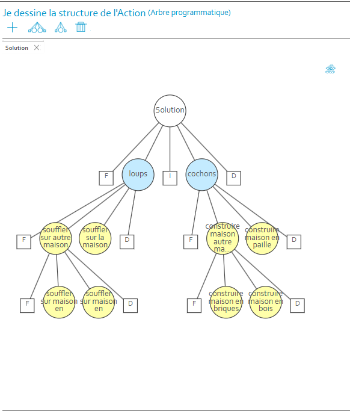

Structur'All — Cahiers de recette & tests
Alternance · MTB111 by Creative · 03/2025 → 06/2025
Rédaction des cahiers de recette et exécution de campagnes de tests fonctionnels sur Structur'All Machine, outil de modernisation de code legacy développé par MTB111 by Creative. Plusieurs centaines de cas de test couvrant différents sujets sur Java, C#, COBOL et PHP.
Comment ça fonctionne ?
Structur'All Machine repose sur une idée simple : tout algorithme peut être décomposé en deux structures de base. La structure répétitive — on répète une action sur chaque élément d'un ensemble. La structure alternative — on choisit entre deux actions selon une condition.
Pour illustrer, prenons l'histoire des 3 petits cochons.


Une fois l'algorithme modélisé, Structur'All peut le transcompiler automatiquement vers n'importe quel langage cible — du COBOL vers Java par exemple. C'est ce qui permet de moderniser du code legacy sans tout réécrire.
Déroulement des campagnes de tests
- Rédaction des cas de test dans Excel (description, données d'entrée, résultat attendu)
- Exécution sur Structur'All Machine en version locale puis web
- Comparaison des sorties et détection des divergences
- Remontée des anomalies via tickets internes avec étapes de reproduction
- Suivi des corrections avec mise à jour des statuts
- Application des cahiers de recette internes comme référentiel de validation de la conformité des transformations produites par Structur'All Machine.
- Remontée structurée des anomalies détectées, avec description précise et étapes de reproduction, via le système de ticketing interne.
- Planification et exécution d'une campagne de tests sur 3 mois, organisée par langage et suivie jusqu'à la correction des anomalies.
- Recette complète d'une plateforme utilisée en production par des clients financiers majeurs avant mise à disposition.